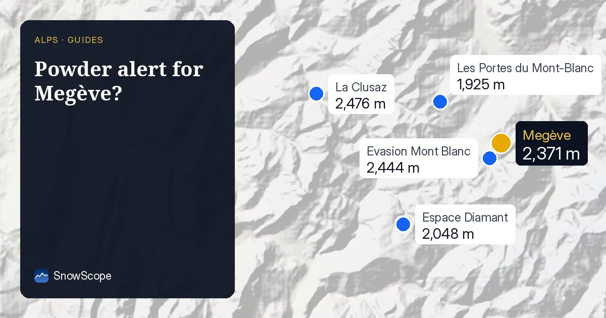

Powder alert for Megève? 9–46 cm of fresh snow next week (23–29 November)
Next week's snow numbers for Megève: 27 cm at the top, 24 cm at mid-mountain, 2 cm at the base, all as the middle of a range for 23–29 November. The top's range runs from 9 to 46 cm, which says as much as the middle value does.
See the live snow forecast for Megève in the SnowScope appSnow depth, powder alerts and the 3D map, free.

Next week, height by height
Read from the top down: 27 cm near 2200 m, 24 cm near 1600 m, 2 cm near 900 m. The low-to-high spread is 9–46 cm at the top and 1–2 cm at the base.
Day by day, the upper mountain picks up most of it on Monday 23 (2 cm, up to 5), Tuesday 24 (3 cm, up to 6), Wednesday 25 (7 cm, up to 10), Thursday 26 (6 cm, up to 10) and Sunday 29 (5 cm, up to 8). Outside those days expect little more than flurries.
How sure is this?
Reasonably, with a caveat. The snow is coming to Megève, but the top could end up anywhere between 9 and 46 cm, and the middle value of 27 cm is only the halfway mark.
The days closest to now are the most reliable; the end of the week is the least.
Picking your day in Megève
Wednesday 25 November brings the most, 7 cm at the top and 10 cm at best: enough to soften the pistes, not enough for a powder day.
The snow lies best on the Mont d'Arbois and Rochebrune tops, with Côte 2000. For the softest turns, look to the north-facing Jaillet and Côte 2000 runs. Lower down, Megève village itself, one of the lowest big resorts in the French Alps will be the first to suffer if the air turns mild.
Is Megève the best bet nearby?
At the top, next week, our forecast gives Flaine (18 km away) 27 cm, Courmayeur (22 km away) 26 cm and Chamonix (26 km away) 27 cm, against 27 cm here.
Snow will not decide between these resorts next week. Height, aspect and which lifts are open will.
Snow or rain at the bottom?
A tale of two heights: 27 cm up high, 2 cm near 900 m. Expect the snow line to hover above the lowest lifts, with grey, wet days in the village while the summits whiten.
Megève is more about meadows and forest than glaciers, so it needs cold air as much as it needs snow.
This week in Megève: the set-up
Before next week even starts, Megève should be holding a deep fresh layer up high: 100 cm from Tuesday 17 to Friday 20 November (84–116 cm), while the base sees almost nothing (0 cm). The second storm then builds on it.
Tips for skiers
- Off the groomed runs, new snow means new avalanche risk: the French avalanche bulletin (BERA) for the massif is the reference.
- Opening dates are the resort's call; our numbers only say how much snow is coming.
- Ride up for the snow: the base gets 2 cm, the top 27 cm.
More maps (external sites)
About these numbers
Snow numbers: our two-week snow forecast issued on 16 November 2026, read at three heights of the resort (top, mid-mountain, base). Each total is the middle of a range, with a low and a high case. These are estimates for the slopes, not resort measurements, and forecasts move from day to day: check the live map before you go.
Cite this report
For research, teaching or the press: the numbers and charts are free to reuse under CC BY 4.0 with this citation.
SnowScope (2026), Powder alert for Megève? 9–46 cm of fresh snow next week (23–29 November), https://snowscope.app/blog/en/2026/11/megeve-powder-forecast-next-week-23-29-november-2026.html, accessed 2026-11-16
SnowScope (Atlas Labs). (2026, November 16). Powder alert for Megève? 9–46 cm of fresh snow next week (23–29 November). SnowScope snow reports. https://snowscope.app/blog/en/2026/11/megeve-powder-forecast-next-week-23-29-november-2026.html
BibTeX
@misc{snowscope2026megevepowderforecastnext,
author = {{SnowScope (Atlas Labs)}},
title = {Powder alert for Megève? 9–46 cm of fresh snow next week (23–29 November)},
year = {2026},
month = nov,
howpublished = {\url{https://snowscope.app/blog/en/2026/11/megeve-powder-forecast-next-week-23-29-november-2026.html}},
note = {Published 2026-11-16 11:29 UTC; accessed 2026-11-16}
}· CC BY 4.0 · Methods, data and tools →
Megève: snow and temperature by height, this winter vs last (tools) →
Follow Megève
Free: a message when fresh snow is coming, and the forecast every morning.
More snow reports

Orcières Merlette offers a high base at 1826 m and a 6-day pass from 227 EUR, making it a reliable choice for a December ski trip.

Obertauern December skiing: 43 cm on a typical 15 December at mid-mountain, and a 6-day pass of EUR 331 before Christmas. Snow history and prices.

Montgenèvre has 56 cm of usual December snow at its base, giving weekend drivers deeper early cover than Sestriere across the border.